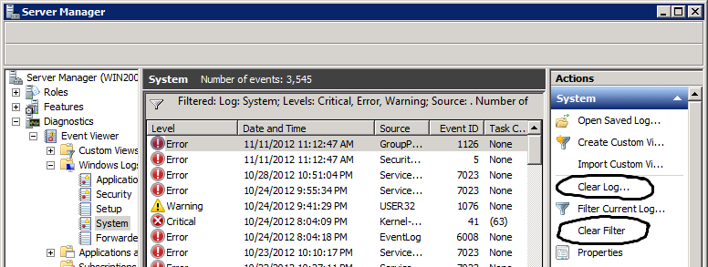

Windows Event Log Tips
Event Viewer GUI
Microsoft updated the Event Viewer GUI starting with Vista/2008.
I like the Ctrl+F Find, although the filtering
functionality could still use some work.
Find An Event with Ctrl+F
To find an event in the Event Viewer GUI, use
Ctrl+F or the Find button. (I'm embarrassed to
admit that it took me a long time to realize the Find button and
Ctrl+F were there.) I believe this is only
available in Vista/2008 and up.
Note: This even finds text strings that only exist in the combination of the format string and message parameters.
Note: The GUI Event Viewer filter's "User" field will not find Logon events by username.
Turning off Filtering - Cautionary Note
If you do Filtering in the Event Viewer GUI, and then turn the Filtering back off, just be a little careful.
Notice how close together those two options on the right side are. "Clear Filter" to see the entire log again, versus "Clear Log..." to lose the entire log forever...slight difference there. (I live in fear of someday choosing the wrong one...I may be a sad, sad person.)
Powershell Event Log Cmdlets
Powershell has two cmdlets for retrieving Windows event logs,
Get-EventLog and Get-WinEvent. The
latter is new with Windows Vista/2008.
Get-EventLog
Pros:
- It is the only cmdlet available on Windows XP/2003? (And on newer versions of Windows, it is the only cmdlet that can read ''remote'' event logs from Windows XP/2003 computers?)
-
It provides a convenient
-Messageparameter for easily searching message contents. It is the only cmdlet that efficiently lets you combine this message text search with a parameter (-Newest) which can efficiently limit the results to the most recent few events?
Cons:
- It cannot return events from all Windows Vista/2008 and newer event logs. It can only return events from the "Classic" event logs (which I believe are the event logs like Application, Security, Setup, and System, not the new ones under Applications and Services Logs.)
Get-WinEvent
The pros and cons of Get-WinEvent are the converse
of those for Get-EventLog.
Filtering Event Logs By Message Description in Powershell
Powershell's two Windows event log cmdlets differ in their
filtering behavior, but both have useful options. Make use of
Get-WinEvent's -MaxEvents parameter and
Get-EventLog's -Newest parameter when testing
filters. They always seem to filter quickly, and reduce output
when testing.
Tip: The following might find recent logons for a user named Lethargo, although you might need UAC elevation to access the Security event log:
Get-WinEvent -FilterHashTable
@{ LogName="Security"; ID=4624; Data="Lethargo" }
-MaxEvents 10
Miscellaneous Event Log Tips
- When reading through Logon event messages, don't stop at the "Subject" user...keep reading further down the message.
-
With
Get-WinEvent -FilterHashTable, you can useData="service name", but I haven't found a way to search on a whole message description (formatted or unformatted?). -
The wevtutil command can also list event log messages.
wevtutil gp "Service Control Manager" /ge /gm
Windows Event Log XPATH Filtering Tip
This query seemed to give only Svc Ctrl Mgr info events (& verbose?), including starting, stopping, and changing from demand to auto start (7040)...
<QueryList>
<Query Id="0" Path="System">
<Select Path="System">
*[System[Provider[@Name='Service Control Manager']
and (Level=4 or Level=0 or Level=5)
]
and
EventData[Data[@Name='param1']='Windows Time']
]
</Select>
</Query>
</QueryList>
This query should be its inverse, and it appears to be in initial testing. Compared to the previous query, note the additional Select * line, and the replacement of Select from the previous query with Suppress. It seems to give System event log, minus informational (& verbose?) Service Control Manager messages about the Windows Time service.
<QueryList>
<Query Id="0" Path="System">
<Select Path="System">*</Select>
<Suppress Path="System">
*[System[Provider[@Name='Service Control Manager']
and (Level=4 or Level=0 or Level=5) ]
and
EventData[Data[@Name='param1']='Windows Time']
]
</Suppress>
</Query>
</QueryList>